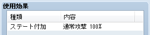
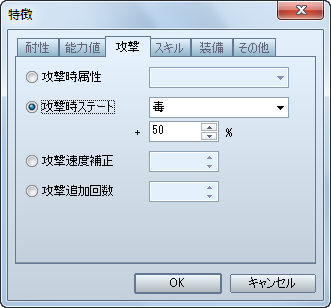

这里解说 VX 用户可能会感到疑惑的地方。
普通攻击的命中率，在 VX 中是直接使用装备武器的命中率（空手时为 95%）。而在 VA 中使用的是[角色]、[职业]、[武器]、[护甲]、[状态]的特性中设置的命中率之和。因此，如果以 VX 的感觉来设置武器命中率的话，经过[武器]之外设置的命中率相加后，可能会导致最终命中率超过 100%。
VA 中，在[角色]和[职业]的特性中设置的命中率相加就是空手时的命中率。因此，角色的基本命中率应该在[角色]和[职业]中设置，而[武器]、[护甲]、[状态]这三个里面则设置基本命中率的修正值。
在[技能]和[物品]中的[使用效果]中可以设定[附加状态]。在可选的状态之中，有一个[状态]标签里不能设置的[普通攻击]。这是继承了装备中的武器上设置的[攻击附加状态]。
比如，你可以新建一个技能「强击」，可以造成比普通攻击更高的伤害，并且附加状态「普通攻击」。那么，使用「强击」时，装备普通的武器就只会造成更大伤害，而装备了普通攻击带「毒」状态的武器后，「强击」也会带有附加「毒」状态的效果；装备了普通攻击带「睡眠」状态的武器后，「强击」也会带有附加「睡眠」状态的效果。
VX 为你准备了「毒攻击」和「黑暗攻击」等带有追加效果的普通攻击技能。但 VA 中没有了这些。想要制作使用这种攻击的敌人，不需要准备新的技能，按照以下方式设置即可。
[敌人]特性-攻击-攻击附加状态

VX 的素材基本都可以直接用于 VA。但是也发生了一定的变化，要沿用图像素材的话请参考以下的表格。
| 素材名 | 文件夹 | 备注 |
| 人物 | Graphics/Characters |
|
| 脸图 | Graphics/Faces |
|
| 敌人 | Graphics/Battlers |
|
| 动画 | Graphics/Animations |
|
| 图块 | Graphics/Tilesets | ● 文件夹位置变化 ● 设置时将模式选为[兼容 VX 的类型]。 |
| 远景图 | Graphics/Parallaxes |
|
| 心情图标 | Graphics/System |
|
| 消息背景 | ---------- | ● 不能使用（※） |
| 图标 | Graphics/System |
|
| 开始战斗时效果 | Graphics/System |
|
| 战斗画面地板 | ---------- | ● VA 已废弃，无法使用 |
| 飞艇影子 | Graphics/System |
|
| 标题画面 | Graphics/Titles1 | ● 文件夹位置变化 |
| 游戏结束画面 | Graphics/System |
|
| 窗口皮肤 | Graphics/System |
|
| 图片 | Graphics/Pictures |
|